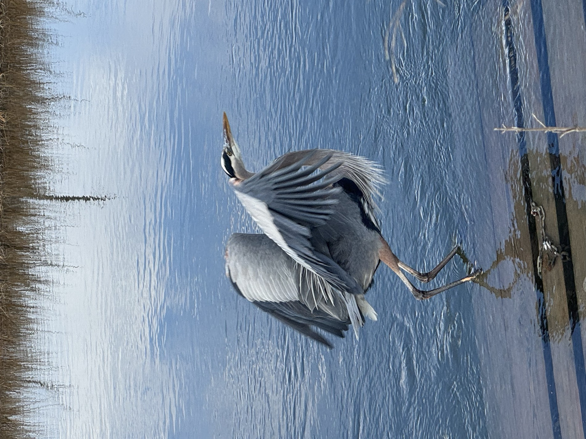

A great blue heron hunting looks, for long stretches, like a bird that has forgotten what it was doing.
It stands in six inches of water with its neck folded, entirely still, for a minute, then two, then five. Nothing about it suggests intent. Then the neck unfolds and the bill goes into the water and comes back with a fish, and the whole motion is over before you have registered that it started.
That is the animal. Almost all of it is waiting.
The specifications are misleading
A great blue heron stands about four feet tall with a wingspan of roughly six feet. It is the largest heron in North America and one of the largest birds most Delawareans will ever see outside a zoo.
It weighs about five or six pounds.
That number is the interesting one. A bird the size of a child weighs less than a housecat, because it is built out of hollow bone and feather and very little else. What looks like mass on a heron is mostly surface area — which is why one lifting off a marsh appears to move in slow motion, and why a bird that seems far too big to be delicate flies with almost no sound.
What it is doing when it does nothing
The hunting method is the part worth learning to read, because it is happening constantly in Delaware and almost nobody watches it long enough to see the point.
Herons forage mostly by standing still, or by walking very slowly in shallow water, waiting for a fish to come within range — then striking with a rapid thrust of the bill. That is the entire technique. There is no chase.
Which means the stillness is not rest. It is the work. The bird is holding a position in water where prey is likely to pass, staying motionless long enough to stop being a threat in the fish's estimation, and conserving everything for one strike. A heron that moves too often eats less.
The diet is broader than people assume. Fish, certainly, but also rodents, voles, small birds, turtles, snakes, salamanders and large insects. A heron standing in a wet field a long way from any water is not lost. It is hunting something that lives in the grass.
Why Delaware suits them
Delaware is, functionally, a state made of edges.
Tidal marsh, estuary, tidal creek, impoundment, farm ditch, millpond, bay shore — the shallow margins where a heron can stand and see into the water are close to ubiquitous here, and they connect. A bird can work a marsh at high water, a creek mouth as it drains, and a flooded field after rain, without covering much ground.
Great blue herons are present in Delaware year-round rather than passing through, and they are among the most reliably visible large birds in the state. They turn up at the federal refuges — Bombay Hook and Prime Hook — and equally at drainage ditches beside the highway, which is part of their appeal. Delaware's most impressive bird is not rare and does not require a trip.
They are also not the only heron working these edges. DNREC's own material on Delaware herons covers the little blue heron and the green heron alongside the great blue — the green heron being much smaller, much more secretive, and a genuine surprise the first time you separate one from the vegetation it is standing in.
A claim we are leaving alone
You will encounter the statement that Delaware holds the largest gathering of herons north of Florida, generally attached to Pea Patch Island in the Delaware River.
Pea Patch does host a very large, genuinely significant wading-bird nesting colony, and that much is well established. The superlative is repeated widely in tourism writing, and this publication has not been able to verify it against an authoritative source to its own standard — DNREC's published material on Delaware herons does not make the claim.
So here is the version we can stand behind: Pea Patch Island supports one of the most important wading-bird nesting colonies on this coast. That is a smaller sentence than the one on the brochure, and it is one we have checked.
How to actually watch one
Stop the car. That is most of it.
Herons are habituated to traffic and largely indifferent to a stationary vehicle, and much less tolerant of a person walking toward them across open ground. The best heron watching in Delaware is done from inside a car on a refuge loop, or from a fixed position on a bank that you reached slowly and then stopped moving.
Then give it ten minutes. This is the part people skip. A heron on a five-second glance is a decorative grey bird standing in water. A heron over ten minutes is a predator running a calculation, and the strike, when it comes, is genuinely startling — one of the fastest things you will see a large animal do.
The bird is not doing nothing. You just arrived in the middle of the part where it waits.
Sources: Audubon field guide to the great blue heron for foraging behaviour and diet; Delaware DNREC, Outdoor Delaware, on great blue, little blue and green herons in Delaware; standard reference accounts for size, wingspan and weight, which are given as approximate ranges rather than fixed figures. The frequently repeated claim that Delaware hosts the largest heron gathering north of Florida is widely circulated in tourism material; it could not be verified against an authoritative source for this article and is deliberately not asserted here. Pea Patch Island's significance as a wading-bird nesting colony is well established and is described in those narrower terms.